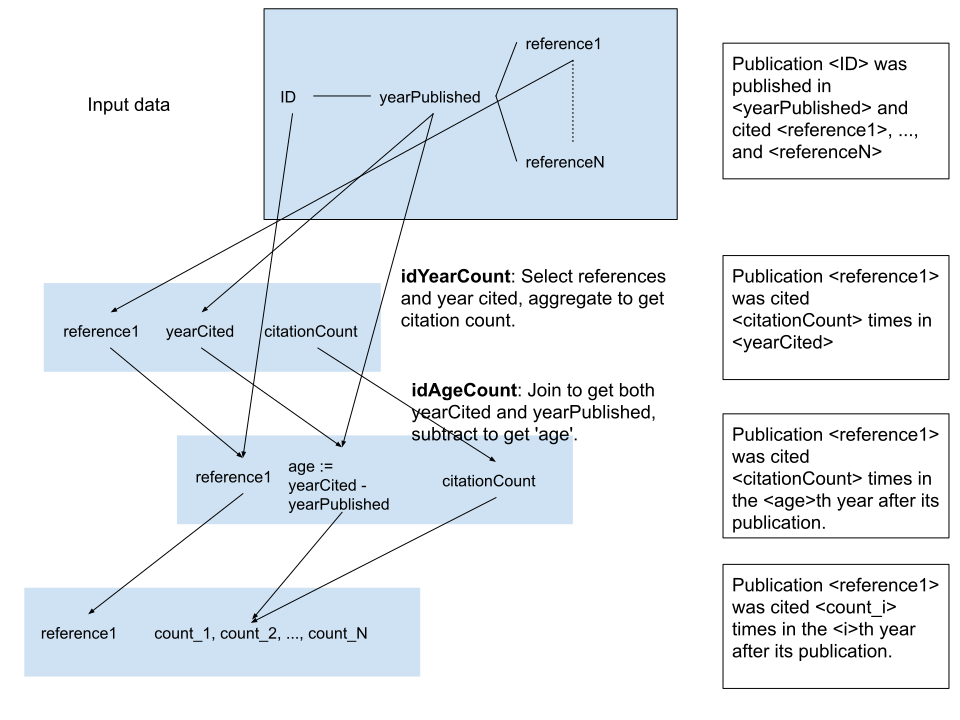

Spark: many ways to do the same thing
Spark lets you do things in many different ways – Scala, Python, or Java; RDDs, Dataframes, Datasets, SparkSQL each have their own APIs and idioms; you can fiddle with a bunch of parameters, and of course you can decide to pre-process your data. And that’s not a full list.
I thought I’d do several implementations of the same data transformation and compare them, mainly for how easy they were to develop and debug.
Below, I outline one Scala- and two Python-based implementations, and I provide basic observations of performance using json or parquet input formats. I focus on the APIs more than on performance because I have not done a full performance evaluation (and because frankly, the posting is already way too long).
I’ve included code snippets throughout; the full code is available from my github.
Background for the code
As before, I use a data dump obtained from dblp. DBLP make their data available under an Open Data Commons ODC-By 1.0 License.
I got the data in json format. There’s about 4.1 GB of it, split into four files. The fields I use are:
- year (the year the paper was published)
- id (a string id for the publication)
- references (a list of publication ids, can be null)
I wanted to see how the number of citations that a paper attracts develops over time. So I wrote three spark programs that turn the input data into
- id
- a list of (age, citation count) pairs
where ‘age’ ranges from 0 (the year the paper was published) to whenever the latest citation was. For example, if a paper was published in 2002 and got cited twice in 2003, four times in 2004, never in 2005, and once in 2006, and then never again, it would get this list:
[(0, 0), (1, 2), (2, 4), (3, 0), (4, 1)]and then I turn that into
[0, 2, 4, 0, 1]for plotting.
I include years with no citations to make it easier to plot.
There are some more or less obvious issues with the data. One is that some publications are cited before they are published; sometimes this is because of the way the publication process works (e.g. the paper was available as a preprint and the people citing it knew it was accepted for publication in a given venue, so they cited the peer-reviewed version rather than the preprint). Sometimes this is because of a merging bug or artefact in DBLP (usually this is a famous paper that got re-issued in a collection and DBLP merged the two publication records using the later date).
This should be cleaned up (not least because some of the affected papers have a lot of citations), but for this post, I just ignore “time-traveling” citations. This is because handling them makes the code more complex without adding insights about the API or performance differences I want to cover.
Transformation outline
The general transformation is the same for each version:

In a first step, I extract references and years from the base data; the years
now represent the year the reference was cited. I count the number of citations
per reference and year. This gets me the idYearCount table.
Then I join that table with the original data to get the publication years for
the references. I subtract the publication year from the citation year to get
the citation age. This gets me the idAgeCount table.
After that, I group by id and collect pairs of citation age and citation count into
lists, which I flatten to get just arrays where the nth entry is the number
of citations in the nth year after publication.
Conclusions
APIs
I found plain RDDs in Python easy to develop for. The map and reduceByKey
calls are really powerful. However, the limitation of joins to pair RDDs makes
for some awkward extra operations.
The DataFrame API is much richer.
However, compared to RDDs, I found it harder to get a general picture of the
available methods for Dataframes in pyspark. Of course there is
API documentation
but it generally took some work to figure out the different options for achieving
what I wanted, for example, how to aggregate into a list (collect_list), or
what a ZippedPartitionsRDD does.
The Dataset API (available for Scala but not for Python) is even richer than the one for DataFrames, but similarly confusing in terms of the available documentation, for example around joins.
For both DataFrames and Datasets, there is API documentation on the apache spark homepage, but this tends to be limited to what’s been extracted from Javadoc, with a few examples thrown in here and there. There is also a lot of blog posts and stack overflow questions/answers around various topics, with wildly varying degrees of usefulness; particularly aggravating are the sites that seek to monetize spark “tips” with a lot of ads.
I did not try a SparkSQL-centric variant; maybe that would have allowed the optimizer to really shine? I’d have to use a larger dataset and more complex operations for that though.
Both DataFrames and Datasets make it easy to rename columns and to ensure they
have the right types. I find this useful; it is very annoying for operations
on columns to fail or give the wrong answer because the data types are not
correct, or for e.g. joins to degenerate because col("_2") is a different value
from what you thought it was, maybe because you changed a “select” statement
several lines above.
I wrote unit tests for all variants; once you know how to get a spark context in your unit tests, this is doable. Of course I ran into the fact that in Python, operations on DataFrames need a spark session to have been initialized as well, and of course there is no straightforward error message when you don’t – I got a stack trace, pasted that into Google and got a StackOverflow posting that told me what I needed to do. But I’m afraid I have become used to that.
Performance
Here is a table with the running times I measured (in minutes):
| Scala | Python RDD | Python DF | |
|---|---|---|---|
| json | 4.4 | 8.4 | 5.4 |
| parquet | 3.9 | 7.2 | 4.2 |
I used the spark history server to evaluate overall running times and to investigate where time was being spent. Of course the actual numbers are meaningless because they depend on the machine(s) you’re running on, and anyway, this is a small workload that I ran on a single machine. I’ve not run on a cluster because I need a bigger workload for that (with a small workload, I think I’d be primarily measuring the overhead of running on a cluster). I’ve got a few things in mind.
With the dataset and code I explored here, most of the time was being spent
reading the data from disk. This happens twice, once to populate idYearCount,
and once to join idYearCount with the original table. There’s really no way
around this join because you need the year column twice in two different
“roles” (once as the publication year and once as the citation year).
The very first version of the code was in a Jupyter notebook (not shown here),
and it took about 20 minutes to run. Running Python or Scala code with
spark-submit cut this down significantly (to between 4 and 8 minutes).
Reading from json, it made no difference for performance whether I specified a schema. Reading the full 4.1GB from disk took a bit over two minutes on my computer, and this happens twice for the program, meaning you can’t get running times below 4.x minutes. I don’t actually use most of the 4.1GB read there, so I figured I would try parquet, which is a columnar data format and should allow spark to avoid reading so much unnecessary data.
I converted the json data to parquet format. I was lazy and did this via the spark shell:
val df1 = spark.read.json("/tmp/dblp-ref/dblp-ref-*.json")
df1: org.apache.spark.sql.DataFrame = [abstract: string, authors: array<string> ... 6 more fields]
scala> df1.write.parquet("/tmp/dblp-ref/dblp.ref.parquet")I could have done more pre-processing here (e.g. only write the fields that the program actually uses), but that’s mostly redundant because parquet will store the columns of the data in separate files anyway.
Once I read from parquet in Python, I could see that the first read (for idYearCount)
accessed 975.9MB and the second one (for the join) just 104.8 MB. The time
spent reading the data was still around 2 minutes for each read, but the
amount of data in subsequent shuffles went down. I’m not entirely sure how that
happens given that the shuffle inputs should be based on the data I join,
and that is always based on the same selection from the input data; maybe some
kind of operation push-down?
In Scala, reading from Parquet had a more dramatic effect, with only 1.3 minutes
being spent reading the data for idYearCount, and only 37s for the second read.
Bear in mind that these numbers are based on a small number of measurements on one
machine; at best, they are indicators that using parquet is really worth it if
you only need some of the columns of your data (which I assume you already knew).
Otherwise, perhaps the largest improvement in going from Python with RDDs to Python with DataFrames is getting rid of the second join. Moreover, it looks to me as though joins on RDDs in pyspark always end up being implemented using a Union (I tried this experimentally from the pyspark shell as well), whereas with the DataFrame-based joins, depending on the details of the code, sometimes I see a SortMergeJoin, and sometimes I only see a ZippedPartitionsRDD. I couldn’t find documentation for this and have not looked at the spark source code to confirm, though.
There is not much performance difference between my Python with DataFrames implementation and Scala; I don’t think this means Scala isn’t worth it. I’m definitely more familiar with Python than with Scala, so I wouldn’t rule out my code being suboptimal; and moreover, it’s very plausible that better optimization capabilities etc. won’t really shine until I try larger datasets and more complex transformations. Stay tuned. One thing to be aware of with Scala vs. Python is that Scala will consume a lot more memory given a chance, and on a low-memory machine, that can lead to garbage collection and swapping effects. This would be more controllable in a cluster environment, it just explains why it’s more fun for me to develop locally using Python than Scala.
Implementation details
Getting a count of citations by year
This is the first step in the diagram above, where I obtain idYearCount.
One of the first programming books I read (the “pink camel” edition of Programming Perl) called this kind of operation “inverting on a secondary key” (or at least that’s what I remember) – you have data keyed by one field and you re-arrange the data so a different field becomes the primary key. So I have rows like this:
id0, 2013, [id3]
id1, 2013, [id3, id4]
id2, 2014, [id1, id4]
And I want to turn them into this:
id1, 2014, 1
id3, 2013, 2
id4, 2013, 1
id4, 2014, 1
With basic RDDS in Python:
# df = <read data from json or parquet>
dd = df.select("id", "references", "year").filter("references is not NULL").rdd
docsplit = dd.flatMap(lambda row: [('{}.{}'.format(ref, row[2]), 1) for ref in row[1]])
idYearCount = docsplit.reduceByKey(lambda c, d: c + d)Note I could have chained all three lines together into one, it would just get harder to read. This makes no difference to how spark executes the code.
docsplit has keys of the form <reference ID>.<yearCited> so that I can count
citations and group by both reference ID and yearCited. This is because
reduceByKey expects there to be one field that is the primary key for the
reduce operation.
With DataFrames in Python:
# df = <read data from json or parquet>
dd = df.select("id", "references", "year").filter("references is not NULL").rdd
docsplit = dd.flatMap(lambda row: [(ref, row[2], 1) for ref in row[1]])
idYearCount = docsplit.toDF().groupBy('_1', '_2').agg({'_3': 'sum'}).withColumnRenamed(
'sum(_3)', 'citationCount').withColumnRenamed('_1', 'id').withColumn(
'yearCited', col('_2').cast(IntegerType())).drop('_2')This avoids the awkward concatenation of id and year in docsplit because
groupBy can take multiple columns. I’ve also taken advantage of column
operations to rename and cast – it makes no real difference here, but I like
having my columns named sensibly and I also did not want the ‘year’ columns
to have a bigint type.
With Scala and Datasets:
I wanted to use Datasets but not primarily the SQL API. No technical reason, I just wanted to explore the Dataset API. I ended up using Dataframes quite a bit because some operations on Datasets (such as joins) return Dataframes.
case class BasePublication(id: String, references: Array[String], year: Int)
// baseData: DataFrame is the data we read from disk. I processed this to
// cast 'year' to an Int because I didn't want it to be a Long. With the
// json data this can be done by specifying a schema to the read; with
// parquet, I use a `withColumn` statement.
val publications = baseData.select("id", "references", "year")
.filter("references is not NULL").as[BasePublication]I use a case class for the publication data I extract from the raw source because why not – it adds a small amount of readability and self-documentation.
Then I looked at how to turn the reference ids into keys and count. My first
attempt mirrored the RDD-based solution because I ended up concatenating
id and year so I could use groupByKey and reduceGroups:
val idYearCount = publications
.flatMap(row => for(b <- row.references) yield (b + "." + row.year, 1))
.groupByKey(_._1)
.reduceGroups((a, b) => (a._1, a._2 + b._2))
.map(_._2)The final map(_._2) call is just to drop an extra instance
of the id because we get the same key from groupByKey and reduceGroups.
Alternatively, because we’re not limited to RDD operations:
val citedPublications = publications.flatMap(row => for(b <- row.references) yield (b, row.year, 1))
val x = citedPublications.groupBy("_1", "_2").agg(sum(col("_3"))).withColumnRenamed("sum(_3)", "tmp")
val idYearCount = x.withColumn("citationCount", x("tmp").cast(IntegerType)).drop("tmp")This avoids the string concatenation (and hence also the subsequent string splitting). Performance effects from this change were not particularly visible, but I assume they would be visible at greater scale (saving a large number of string operations tends to be worth it). I don’t do a lot of shuffling or re-partitioning in this example, but if I did, that would be another reason to be wary of modifying the keys of my data sets.
I’ve included code to rename and cast the citation count here because I wanted it to be an Integer rather than a Long. That’s just cosmetic, though.
Joining to get both the year of publication and the year of citation
Next, I join idYearCount with a table of publication ids and publication
years selected from the original data, so that I can compare the year(s) a
publication was cited and the year it was published.
With Python and RDDs:
ddpairs = df.select("id", "year").rdd
idYear = idYearCount.map(lambda row: (row[0][:-5], int(row[0][-4:])))
idYearAge = idYear.join(ddpairs).filter(
lambda row: (row[1][0] - row[1][1] >= -1)).map(
lambda row: ('{}.{}'.format(row[0], row[1][0]), (row[1][0] - row[1][1])))
idAgeCount = idYearAge.join(idYearCount)As before, df is the data read from disk. I select ddpairs without the
references is not NULL clause because some references may not cite references
themselves, but I still want to be able to find their publication years.
The idYear line splits just the id and yearCited fields out of
idYearCount. Then I join with ddpairs to get an RDD of id and age,
the filter statement drops those “time-traveling” citations that are due to
bad data, and then I re-format to get keys of the form id.year and values
representing the citation age. This is so I can join with idYearCount and get
the citation counts back.
You’ll notice this is really awkward, and that’s basically because RDDs
only support joins on pair RDDs. This means
whenever I want to join, I need to have two RDDs that are just collections of
key-value pairs. There’s a few different ways that I could have finagled this
here, and I chose the approach above. Whichever way you look at it though, it’s
not pretty.
With Python and DataFrames:
dfpairs = df.select("id", "year").withColumn(
"year", df["year"].cast(IntegerType()))
idAgeCount = idYearCount.join(dfpairs,
idYearCount['id'] == dfpairs['id']).withColumn(
'age', col('yearCited') - col('year')).drop(dfpairs['id'])This is clearly way easier than the RDD version. And it’s just one join, too.
With Scala:
Assume I’m using the second version of the code above (no concatenation
of publication id and year). We have idYearCount, which is a DataFrame
containing Rows with string, int, int.
case class CitedPublication(id: String, yearCited: Option[Int],
age: Option[Int], count: Option[Int])
val ddpairs = baseTable.select("id", "year")
idAgeCount = idYearCount
.join(ddpairs, idYearCount("_1") === ddpairs("id"), joinType="right_outer")
.drop("_1")
.withColumn("age", when($"_2".isNotNull, $"_2" - $"year").otherwise(lit(0)))
.drop("year")
.toDF("yearCited", "count", "id", "age")
.as[CitedPublication]I decided to get fancy and used a right outer join so I’d also get entries
for publications that were never cited. That is why the age column clause
has to handle the case when there was no left join partner, so _2 is null.
I actually left out the filter for negative age in the Scala code because the subsequent code makes it unnecessary.
Aggregate and flatten into plottable lists
With Python and RDDs:
Now I collect the ages and citation counts into lists like so:
ageCountLists = idAgeCount.map(
lambda row: (row[0][:-5], [(row[1][0], row[1][1])])).reduceByKey(
lambda c, d: c + d)The map removes the year appended to the key and turns the age and
citation count data into a list with one pair.
Then reduceByKey appends all the lists for the same publication together.
This gives us rows like this:
publicationId, [(0, 1), (2, 4), (3, 1), (6, 1)]which means: The publication publicationId was cited once in the year it
was published, never in the following year, four times in the second year
after its publication, etc.
Now I want to turn that into an array of citation counts where the nth entry in the array is the number of citations n years after publication.
I implemented a helper method for this, but did not use a UDF.
class pairsToArrayHelper(object):
@staticmethod
def pairsToArray(pairs):
d = dict(pairs)
return [d[x] if (x in d) else 0 for x in range(max(d.keys()) + 1)]And then call it like this:
p2Afunc = pairsToArrayHelper.pairsToArray
citationCountArrays = ageCountLists.mapValues(lambda x: p2Afunc(x))The reason I put pairsToArray in its own class is serialization. If you want
to use a function in a mapper, the code needs to be transmitted to the mapper.
This usually means the object defining the function must be serialized, which
is difficult when it’s also the object that holds e.g. your SparkSession.
With Python and DataFrames:
# idAgeCount contains citationCount, id, yearCited, year, age
# combine 'age' and 'citationCount' into pairs, then drop everything
# except for 'id' and those pairs, group by id and make lists of the pairs.
tmp = idAgeCount.drop('_1').drop('year').filter(
col('age') > -1).withColumn('ageCountPair', struct(
idAgeCount.age, idAgeCount.citationCount)).drop('age').drop(
'citationCount').groupBy('id').agg(
collect_list('ageCountPair').alias('ageCountPairs'))
# now tmp rows have an id and a list of ageCountPairs, and each ageCountPair
# is a Row with age and citationCount. At this point, we can either
# continue processing the data using udfs or various array or map functions
# on dataframes, or just convert tmp to an rdd and use mapValues on it.
# I ended up doing the latter since it seems way easier and is probably no
# less efficient than using a udf from python.
p2Afunc = pairsToArrayHelper.pairsToArray
citationCountArrays = tmp.withColumn('ageCountMap',
pyspark.sql.functions.map_from_entries('ageCountPairs')).drop(
'ageCountPairs').rdd.mapValues(lambda x: p2Afunc(x))Because I wasn’t joining pair RDDs here, I have a lot more columns in
idAgeCount, which I clean up. Otherwise, the code is substantially similar
to the RDD-based variant (and I drop into rdd.mapValues() to apply the
pairsToArray function to each row).
With Scala:
idAgeCount is the Dataset of CitedPublications obtained above.
// Map publication id to a list of citation counts by age.
// The ith entry in the history is the number of citations i years after
// publication.
case class CitationHistory(id: String, history: Array[Int])
val tmp = idAgeCount.map(row => (row.id, row.count match {
case Some(x) => Array[Tuple2[Int, Int]]((row.age getOrElse 0, x))
case None => Array[Tuple2[Int, Int]]()
})).groupByKey(_._1).reduceGroups(
(a, b) => (a._1, a._2 ++ b._2)).map(row => (row._2._1, row._2._2.toMap))
tmp.map(row => (row._1, {
var l = Array[Int]()
if (!row._2.isEmpty) {
val mx = row._2.keys.max
for (a <- 0 to mx) {
l :+= row._2 getOrElse(a, 0)
}
}; l;
}
)).toDF("id", "history").as[CitationHistory]Here I use an anonymous function instead of the pairsToArray helper I had
for the Python code. Because i used Option types in CitedPublication,
I have to handle the case when e.g. the count column is None.
Summary
Thanks for reading this far! Overall, this was a fun exercise, and I look forward to trying a larger workload next.